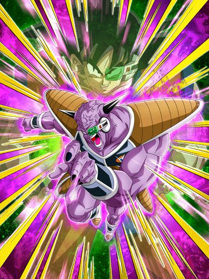

Uma das maiores crueldades do Global foi fazer geral skipar o Ginyu pelo aniversário
Que tristeza..

O Ginyu realmente chegou, virou o melhor TUR do jogo e não elaborou mais nada.
Ele obviamente só funciona em um time Ginyu Force, mas ele é MUITO quebrado no time
O cara fica super efetivo sempre, dá 30% de ATK e DEF pra Ginyu Force e ainda ganha +50% de ATK e DEF com 5 aliados da categoria no time
Além disso, ele stacka 30% de DEF no Super e lança um adicional com 30% de chance de ser um Super, podendo lançar até 3 Supers por turno
Como se não bastasse tudo isso, a condição da Active Skill dele é muito decente e ele tem animações LINDAS
Simplesmente fique abaixo de 70% de HP a partir do turno 4 e fique mais quebrado ainda..
Só pro caso de vc não achar o dano bom o suficiente.
Esse cara mantém o adicional q ele já tinha, ganha stats muito mais altos e ainda builda 50% de ATK, DEF, chance de crítico e chance de desvio atacando 5 vezes
E agora ele stacka 30% de ATK no Super, então o dano dele fica insano também
E ainda completa com o pequeno extra de ele ter 50% de chance de ter scouter se tiver um Jeice no time
Dá pra você tecnicamente aproveitar dessa habilidade transformando o Ginyu, vendo aonde está o Super do boss, e então resetando o jogo, podendo preservar sua transformação pra mais tarde
Mas não é como se ele precisasse né
O cara tem um dos melhores banners de todos e é o melhor TUR, goat.
O parceiro e slot 1 perfeito pro Ginyu.
Esse card é realmente um suporte perfeito, deixando o slot 1 completamente seguro pra que o Ginyu cozinhe no slot 2
Com um Ginyu no turno, eles tem defesa ativa e ganham 50% de DEF multiplicativa ao levarem um golpe
Além disso, buildam mais 50% de ATK e DEF tomando 5 golpes e conseguem selar, stunar e debuffar o Boss
Eles podem não dar suporte de stats diretamente pro Ginyu, mas eles ajudam ele de um jeito super competente.
Eu não sou muito fã deles.
Esses caras genuinamente são um suporte, dando um total de 60% de ATK e DEF pro time, o que é muito forte
O único problema é que eles são um personagem de desvio, e se eles não desviarem.. já sabe
Eles tem 50% de chance de desvio, o que é até aceitável, mas não acho suficiente
Eles também buildam 50% de ATK e DEF atacando 5 vezes mas.. é meio demorado demais pra eles estarem buildados e não faz tanta diferença
O suporte deles é MUITO bom, mas eu acho q é bem perigoso levar eles pra eventos às vezes..
O orb changer que faltava pra completar o time.
Além de eles darem suporte de 30% de ATK e DEF pra geral, esses caras mudam orbs aleatoriamente pra rainbow se tiver um aliado Ginyu Force no turno
É meio óbvio que é o único time q eles funcionam, então você sempre vai ter o orb change ativo
Enfim, tirando o suporte, eles são um card bem "ok", tendo uma defesa minimamente decente e dano aceitável.
Os cara demoraram mais que a própria Ginyu Force slk
Tem algumas coisas de valor aq mas em geral, são personagens "ok" apenas
Personagem que dá dano.
Esse cara ganha stats a mais se estiver enfrentando só um inimigo, e lança um Super Attack adicional se tiver mais de um inimigo
E ele tem 50% de chance de crítico se tiver um aliado Bardock Team no time
Bem simplão, nada de muito especial.
Suporte interessante.
A Fasha tem 50% de chance de desvio sem restrições, e ainda muda orbs aleatoriamente pra rainbow se tiver um Bardock no time, o que é bem útil
Caso ela desvie, ela dá 30% de ATK e DEF pra Team Bardock, o que incentivaria a pessoa a colocar ela no slot 1.. e isso não é uma boa ideia
Mas em geral, suporte que desvia bem útil pro time
O único desses cards que não é só usável em um time.
Esse cara stacka 20% de ATK e DEF no Super Attack e dá 30% de ATK e DEF pra todo mundo sem restrição
As únicas coisas restritas que ele tem são dar 10% de chance de crítico pra Team Bardock e curar um pouco de HP se tiverem 3 Low-Class Warrior no time, o que não muda quase nada
Se você precisa de um suporte pra Pure Saiyans ou algo assim, esse cara pode acabar sendo uma opção interessante.
Não gostei muito não.
Esse cara dá um dano decente e até dá critico garantido se o inimigo estiver stunado.. só que o próprio Shugesh não faz isso no Super Attack?
Ele stuna o inimigo, mas só se o Super dele já estiver selado, então não tem quase nenhuma diferença
Não diria que é um "design contraditório" nem nada, mas custava mesmo colocar uma chance de stun no Super desse cara? Nem que fosse 30% pô
Não ironicamente, um bom tank.
Esse cara ganha 20% de ATK e DEF por orb pega, sendo um semi-nuker basicamente
Além de ganhar 10% de redução de dano por Team Bardock no time, chegando ao máximo de 50%
Ele pode não ser um tank perfeito, mas chegar a níveis aceitáveis de defesa com 50% de redução de dano é bem impressionante pra um card F2P.
E é isso.
Como eu disse, nada muito impressionante.
Esses caras são genuinamente bons, mas não tem time e nem parceiros de link.
Eles tem defesa ativa nos primeiros 5 turnos deles, tem uma defesa bem decente se estiverem acima de 50% de HP, e o dano deles é muito bom
Se eles levarem um golpe no slot 1, eles lançam um Super adicional
E esse adicional é útil, pois eles stackam 30% de ATK no Super Attack, transformando a Active Skill numa bomba atômica
E falando na Active deles, se você levar 7 ataques ou cair abaixo de 50% de HP, você pode usar
A recomendação é usar depois da defesa ativa deles acabar né, mas fica a seu critério
Muito forte por um turno.
O Piccolo só tem defesa ativa por 1 turno, então nem tenta arriscar muito em colocar ele na frente de muitos ataques
Ele ainda tem muito dano e ainda quebra uma ação do inimigo se estiver com 24 de Ki
Não só isso, mas ele também cura 10% de HP todo turno e o Super Attack dele stacka DEF ao invés de ATK
Esse card tem a arte bonita, OST braba, animações boas e um kit decente, só faltou o time mesmo 💀
Ele é útil se tiver vantagem de cor.
Esse cara tem 50% de chance de ter defesa ativa se tiverem 3 aliados Android/Cell Saga no time.. ou defesa ativa garantida se tiverem 3 ou mais inimigos
E caso ele tenha defesa ativa, ele ganha 60% de redução de dano, o que é bem forte
Bom, eu prefiro não arriscar esse rolê todo
Vantagem de cor conta como ter defesa ativa, então contra um inimigo TEQ, esse cara tem vantagem de cor e a redução de dano, ficando quase invencível
Tirando isso, o dano dele é baixo e a defesa em si não é alta não, ele é carregado pela redução de dano mesmo.
Você chegou ao fim dessa página!
Obrigado por ler tudo, e fica a vontade pra ver outras